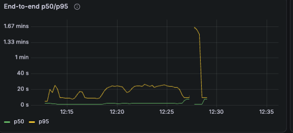

3 · What broke after recovery
| step | pod | sticky | hop | code | upstream | cached |
|---|---|---|---|---|---|---|
| 15 | vllm-1 | hit | - | 200 | 1.2 s | 10,192 |
| 16 | vllm-0 | broken_load | hopped | 502 | 114.1 s | 0 |
| 16 | vllm-0 | hit | - | 200 | 1.1 s | 3,920 |
| 17 | vllm-0 | hit | - | 200 | 0.6 s | 10,192 |
dx-audit-2 at 12:27:31. The source hold took 0.9 s and reported the blocks held. The destination then waited for KV that never came until the 115 s upstream timeout. The agent retried, recomputed the 10k-token history from the shared prefix, and finished the diagnosis.

The only spike in 16 minutes, and it came after recovery, not during the outage.
What we observed
The gateway keeps each worker's Mooncake engine id from the first hop and only clears it if a hold call fails. vllm-1 came back with a new id. The hold on it still succeeded, so vllm-0 tried to pull from the old id and waited. The hop's 10 s timeout only covers the hold, so nothing cut the wait short of the 115 s upstream limit.
The fix, and why the dashboards missed it
Clear the cached id whenever a worker leaves Ready, and bound the receive with its own deadline. On the dashboards, "KV hops by result" counted this as a successful hop because the hold succeeded, and "Upstream errors" only plots transport errors. Only the request log showed it.
It also leaked. vllm-1 freed its held blocks after 480 s. vllm-0 never freed the blocks it had set aside for the receive, and 22% of its KV stayed in use from 12:27 onward with nothing running.
gateway/internal/hop/mooncake.go, hopper.go; DefaultUpstreamTimeout 115 s. vLLM logs: producer "timed out after 480 seconds", consumer "transfer failed: Resource temporarily unavailable". Mooncake TCP measured at 1.6 GB/s idle, 0.1 GB/s under the 32-run load.
8